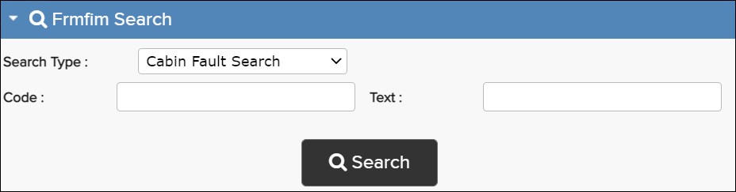

The search types available are described in the sections below.

Maintenance messages help you find the cause of an EICAS message or other fault. Each maintenance message has a message number and a description of the problem (for example, 21−11021 “Chiller Boost Fan does not follow command”). Each maintenance message also has a FIM task associated with it that describes how to fix the issue. Read the INTRODUCTION chapter of a FRMFIM publication for more detailed information about maintenance messages. For specific steps, refer to Search Maintenance Messages.
Every potential problem with the aircraft has a fault code associated with it. A fault code is not a separate category. It reflects a combination of symptoms in its description. Read the INTRODUCTION chapter of a FRMFIM publication for more detailed information about fault codes.
For any chapters in a FRMFIM, you can navigate to a FAULT CODE INDEX to see fault messages sorted by fault code. For the Fault Code Index Search, you can search for any of the codes that appear in the Fault Code column. For specific steps, refer to Search the Fault Code Index.
Read the INTRODUCTION chapter of a FRMFIM publication for more detailed information about EIS messages. For specific steps, refer to Search EICAS/EIS Messages.
Observed system faults are problem symptoms (other than EICAS messages) that a flight crew may notice. An observed fault could be indicative of something that needs to be fixed on the aircraft.
At the top level of a FRMFIM Table of Content, you can navigate to the OBSERVED ALPHANUMERIC FAULT LIST to see faults sorted alphanumerically (separated by index letter pages with links at the top), or you can navigate to the OBSERVED SYSTEM FAULT LIST to see faults sorted by fault code (separated by chapter pages with links at the top). For the Observed Fault Search, you can search for any of the codes that appear in the Fault Code column or use part of any text you see in the Description column. For specific steps, refer to Search Observed Faults.
Cabin faults are problem symptoms that can occur with the systems and equipment in the passenger cabin.
At the top level of a FRMFIM Table of Contents, you can navigate to the CABIN FAULT LIST to see cabin faults sorted alphabetically by description. For the Cabin Fault Search, you can search for any of the codes that appear in the Fault Code column or search for part of any text you see in the Description column. For specific steps, refer to Search Cabin Faults.